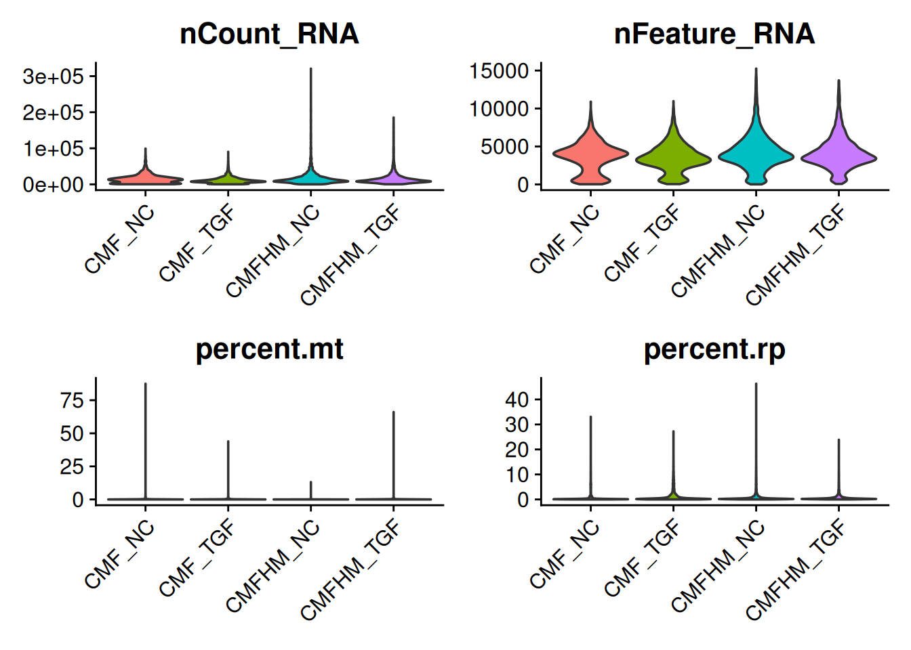
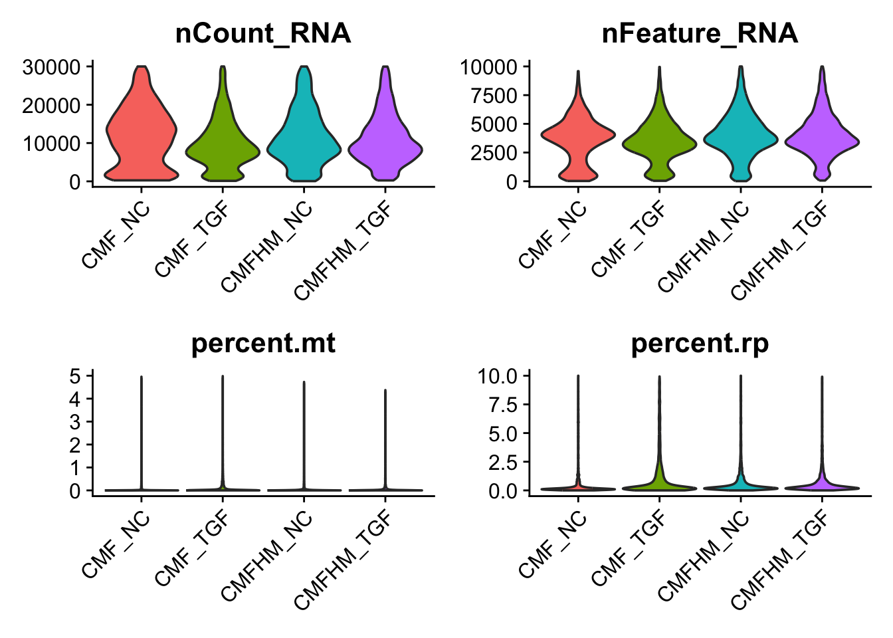
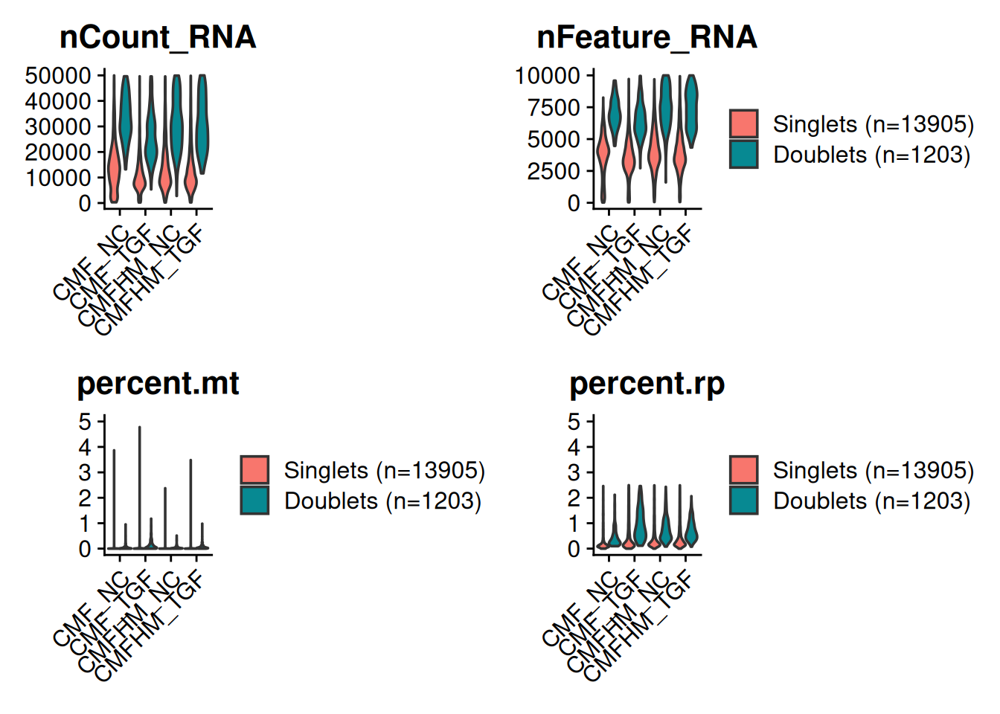
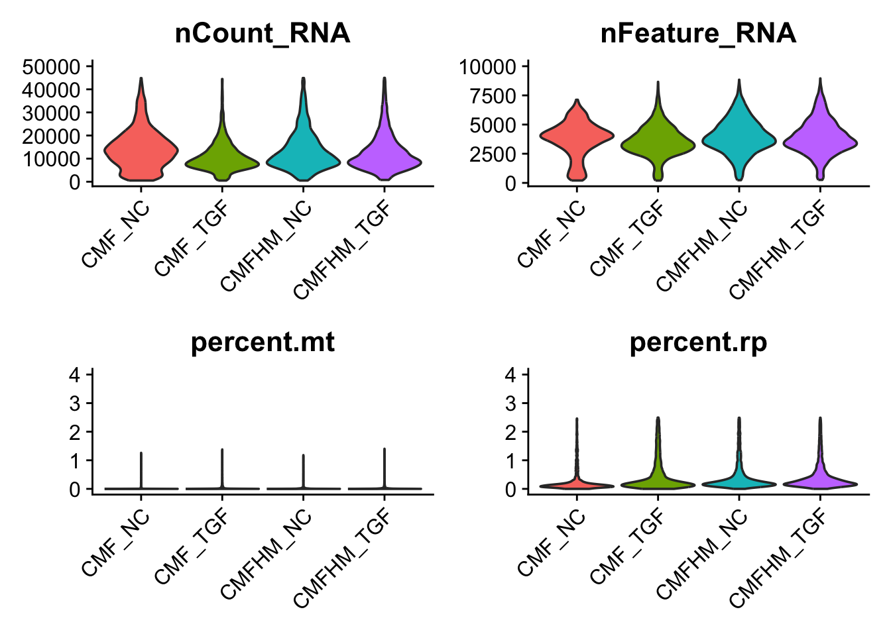

Last updated: 2026-06-30
Checks: 7 0
Knit directory: MT_Project/
This reproducible R Markdown analysis was created with workflowr (version 1.7.2). The Checks tab describes the reproducibility checks that were applied when the results were created. The Past versions tab lists the development history.
Great! Since the R Markdown file has been committed to the Git repository, you know the exact version of the code that produced these results.
Great job! The global environment was empty. Objects defined in the global environment can affect the analysis in your R Markdown file in unknown ways. For reproduciblity it’s best to always run the code in an empty environment.
The command set.seed(20260612) was run prior to running
the code in the R Markdown file. Setting a seed ensures that any results
that rely on randomness, e.g. subsampling or permutations, are
reproducible.
Great job! Recording the operating system, R version, and package versions is critical for reproducibility.
Nice! There were no cached chunks for this analysis, so you can be confident that you successfully produced the results during this run.
Great job! Using relative paths to the files within your workflowr project makes it easier to run your code on other machines.
Great! You are using Git for version control. Tracking code development and connecting the code version to the results is critical for reproducibility.
The results in this page were generated with repository version b844b3a. See the Past versions tab to see a history of the changes made to the R Markdown and HTML files.
Note that you need to be careful to ensure that all relevant files for
the analysis have been committed to Git prior to generating the results
(you can use wflow_publish or
wflow_git_commit). workflowr only checks the R Markdown
file, but you know if there are other scripts or data files that it
depends on. Below is the status of the Git repository when the results
were generated:
Ignored files:
Ignored: .DS_Store
Ignored: .Rproj.user/
Note that any generated files, e.g. HTML, png, CSS, etc., are not included in this status report because it is ok for generated content to have uncommitted changes.
These are the previous versions of the repository in which changes were
made to the R Markdown (analysis/QC.Rmd) and HTML
(docs/QC.html) files. If you’ve configured a remote Git
repository (see ?wflow_git_remote), click on the hyperlinks
in the table below to view the files as they were in that past version.
| File | Version | Author | Date | Message |
|---|---|---|---|---|
| Rmd | b844b3a | Sophie.Alice | 2026-06-30 | adding CM subtype identification |
| html | fe25503 | Sophie.Alice | 2026-06-26 | Build site. |
| Rmd | bccae0a | Sophie.Alice | 2026-06-26 | Adding more |
| html | f44fffe | Sophie.Alice | 2026-06-24 | Build site. |
| Rmd | 3378d5c | Sophie.Alice | 2026-06-24 | Tryinging |
| html | 4803cc4 | Sophie | 2026-06-17 | Build site. |
| Rmd | 0dbaf11 | Sophie | 2026-06-17 | Adding QC |
rm(list=ls())
gc() used (Mb) gc trigger (Mb) limit (Mb) max used (Mb)
Ncells 907251 48.5 1751272 93.6 NA 1321095 70.6
Vcells 1596426 12.2 8388608 64.0 16384 2392624 18.3library(readr)
library(dplyr)
library(ggplot2)
library(Seurat)
library(hdf5r)
library(scCustomize)
library(patchwork)
library(cowplot)
library(ggrepel)
library(workflowr)
library(scDblFinder)Cellbender.master <- "/Users/sophiewagner/Desktop/USZ 25:26/Gabi_Project_Setup/Laila_MT_Project/Laila_MT_Project/Cellbender_Output"
benderfiles <- list.files(
path = Cellbender.master,
pattern = "cellbender_output.*\\.h5",
full.names = TRUE,
recursive = TRUE
)merged_cb_matrix <- Read_CellBender_h5_Multi_File(
data_dir = Cellbender.master,
custom_name = "_filtered.h5",
filtered_h5 = TRUE,
merge = TRUE,
sample_list = c(
"cellbender_output_Exp1L_CMF_NC",
"cellbender_output_Exp1L_CMF_TGF",
"cellbender_output_Exp1L_CMFHM_NC",
"cellbender_output_Exp1L_CMFHM_TGF"),
sample_names = c(
"CMF_NC",
"CMF_TGF",
"CMFHM_NC",
"CMFHM_TGF")
)Reading Cell Bender H5 files from directory
Preparing & merging matrices.
Creating final sparse matrix.Data <- CreateSeuratObject(counts = merged_cb_matrix)
head(Data@meta.data) orig.ident nCount_RNA nFeature_RNA
CMF_NC_CTCGCTTGTATGTCAC-1 CMF 99106 10888
CMF_NC_ACGCTCAGTCAATTCA-1 CMF 86903 9521
CMF_NC_ATCGTACGTTCCTCGT-1 CMF 80289 8847
CMF_NC_ACCCCAAGTGCAGGCA-1 CMF 77964 10780
CMF_NC_CAGTTACGTCTCCAAG-1 CMF 77224 8685
CMF_NC_CACATTAGTTGCGATT-1 CMF 75593 8946Data[["percent.mt"]] <- PercentageFeatureSet(Data, pattern = "^MT-")
Data[["percent.rp"]] <- PercentageFeatureSet(Data, pattern = "^RP[SL]")
colnames(Data@meta.data)[1] "orig.ident" "nCount_RNA" "nFeature_RNA" "percent.mt" "percent.rp" Data$orig.ident <- sub("_([^_]+)$", "", rownames(Data@meta.data))
table(Data@meta.data$orig.ident)
CMF_NC CMF_TGF CMFHM_NC CMFHM_TGF
2985 4549 5496 4012 Data$TGF_status <- ifelse(
grepl("TGF", Data$orig.ident),
"TGF_B",
"NC"
)
Data$Macrophage_status <- ifelse(
grepl("CMFHM", Data$orig.ident),
"With_Macrophages",
"No_Macrophages"
)
colnames(Data@meta.data)[1] "orig.ident" "nCount_RNA" "nFeature_RNA"
[4] "percent.mt" "percent.rp" "TGF_status"
[7] "Macrophage_status"head(Data@meta.data) orig.ident nCount_RNA nFeature_RNA percent.mt
CMF_NC_CTCGCTTGTATGTCAC-1 CMF_NC 99106 10888 0.034306702
CMF_NC_ACGCTCAGTCAATTCA-1 CMF_NC 86903 9521 0.018411332
CMF_NC_ATCGTACGTTCCTCGT-1 CMF_NC 80289 8847 0.001245501
CMF_NC_ACCCCAAGTGCAGGCA-1 CMF_NC 77964 10780 0.069262737
CMF_NC_CAGTTACGTCTCCAAG-1 CMF_NC 77224 8685 0.005179737
CMF_NC_CACATTAGTTGCGATT-1 CMF_NC 75593 8946 0.062175069
percent.rp TGF_status Macrophage_status
CMF_NC_CTCGCTTGTATGTCAC-1 0.6699897 NC No_Macrophages
CMF_NC_ACGCTCAGTCAATTCA-1 0.2416487 NC No_Macrophages
CMF_NC_ATCGTACGTTCCTCGT-1 0.1320231 NC No_Macrophages
CMF_NC_ACCCCAAGTGCAGGCA-1 0.7913909 NC No_Macrophages
CMF_NC_CAGTTACGTCTCCAAG-1 0.1657516 NC No_Macrophages
CMF_NC_CACATTAGTTGCGATT-1 0.4987234 NC No_Macrophagestail(Data@meta.data) orig.ident nCount_RNA nFeature_RNA percent.mt
CMFHM_TGF_GGATGCAAGTGGCGTT-1 CMFHM_TGF 516 252 0.0000000
CMFHM_TGF_GGCGAACAGCTAATGT-1 CMFHM_TGF 342 82 0.0000000
CMFHM_TGF_GCGATTCAGTAATGGA-1 CMFHM_TGF 727 413 0.1375516
CMFHM_TGF_CCGATTAAGAAGCGAT-1 CMFHM_TGF 242 71 0.0000000
CMFHM_TGF_GTCCGCAAGGCTACAC-1 CMFHM_TGF 572 104 66.0839161
CMFHM_TGF_TACCCTTAGCATGATT-1 CMFHM_TGF 505 127 61.9801980
percent.rp TGF_status Macrophage_status
CMFHM_TGF_GGATGCAAGTGGCGTT-1 13.372093 TGF_B With_Macrophages
CMFHM_TGF_GGCGAACAGCTAATGT-1 0.000000 TGF_B With_Macrophages
CMFHM_TGF_GCGATTCAGTAATGGA-1 21.182944 TGF_B With_Macrophages
CMFHM_TGF_CCGATTAAGAAGCGAT-1 0.000000 TGF_B With_Macrophages
CMFHM_TGF_GTCCGCAAGGCTACAC-1 3.671329 TGF_B With_Macrophages
CMFHM_TGF_TACCCTTAGCATGATT-1 7.920792 TGF_B With_Macrophagesp1 <- VlnPlot(Data, features = "nCount_RNA", group.by = "orig.ident",
pt.size = 0) + theme(axis.title.x = element_blank()) + NoLegend()
p2 <- VlnPlot(Data, features = "nFeature_RNA", group.by = "orig.ident",
pt.size = 0) + theme(axis.title.x = element_blank()) + NoLegend()
p3 <- VlnPlot(Data, features = "percent.mt", group.by = "orig.ident",
pt.size = 0) + theme(axis.title.x = element_blank()) + NoLegend()
p4 <- VlnPlot(Data, features = "percent.rp", group.by = "orig.ident",
pt.size = 0) + theme(axis.title.x = element_blank()) + NoLegend()
QC_pre_VlnPlots <- p1 + p2 + p3 + p4 + plot_layout(ncol = 2)
QC_pre_VlnPlots
p1 <- VlnPlot(Data, features = "nCount_RNA", group.by = "orig.ident",
pt.size = 0, y.max = 30000) +
theme(axis.title.x = element_blank()) + NoLegend()
p2 <- VlnPlot(Data, features = "nFeature_RNA", group.by = "orig.ident",
pt.size = 0, y.max = 10000) +
theme(axis.title.x = element_blank()) + NoLegend()
p3 <- VlnPlot(Data, features = "percent.mt", group.by = "orig.ident",
pt.size = 0, y.max = 5) +
theme(axis.title.x = element_blank()) + NoLegend()
p4 <- VlnPlot(Data, features = "percent.rp", group.by = "orig.ident",
pt.size = 0, y.max = 10) +
theme(axis.title.x = element_blank()) + NoLegend()
QC_pre_VlnPlots_zoom <- p1 + p2 + p3 + p4 + plot_layout(ncol = 2)
QC_pre_VlnPlots_zoom
# Removing of extremely low nCount cells
Data <- subset(Data, subset = nCount_RNA > 200 &
percent.rp < 2.5)
# scDblFinder
Data_sce <- as.SingleCellExperiment(Data)
Data_sce <- scDblFinder(Data_sce, samples="orig.ident", clusters = TRUE) | | | 0% | |================== | 25% | |=================================== | 50% | |==================================================== | 75% | |======================================================================| 100%table(Data_sce@colData$scDblFinder.class)
singlet doublet
13909 1199 Data_dbl <- as.Seurat(Data_sce, counts = "counts", data = "counts")
counts_table <- table(Data_dbl$scDblFinder.class)
n_singlet <- counts_table["singlet"]
n_doublet <- counts_table["doublet"]
singlet_label <- paste0("Singlets (n=", n_singlet, ")")
doublet_label <- paste0("Doublets (n=", n_doublet, ")")
Data_dbl$scDblFinder.n <- ifelse(Data_dbl$scDblFinder.class == "singlet",
singlet_label,
doublet_label)
Data_dbl$scDblFinder.n <- factor(Data_dbl$scDblFinder.n,
levels = c(singlet_label, doublet_label))
p1 <- VlnPlot(Data_dbl,
features = "nCount_RNA",
split.by = "scDblFinder.n",
group.by = "orig.ident",
pt.size = 0,
y.max = 50000) +
theme(axis.title.x = element_blank()) +
NoLegend()The default behaviour of split.by has changed.
Separate violin plots are now plotted side-by-side.
To restore the old behaviour of a single split violin,
set split.plot = TRUE.
This message will be shown once per session.p2 <- VlnPlot(Data_dbl,
features = "nFeature_RNA",
split.by = "scDblFinder.n",
group.by = "orig.ident",
pt.size = 0,
y.max = 10000) +
theme(axis.title.x = element_blank())
p3 <- VlnPlot(Data_dbl,
features = "percent.mt",
split.by = "scDblFinder.n",
group.by = "orig.ident",
pt.size = 0,
y.max = 5) +
theme(axis.title.x = element_blank()) +
NoLegend()
p4 <- VlnPlot(Data_dbl,
features = "percent.rp",
split.by = "scDblFinder.n",
group.by = "orig.ident",
pt.size = 0,
y.max = 5) +
theme(axis.title.x = element_blank())
# Combine using patchwork layout
QC_pre_Doublets <- p1 + p2 + p3 + p4 + plot_layout(ncol = 2)
# Render plot
QC_pre_Doublets
# Remove the doublets
Data <- subset(x = Data_dbl, subset = scDblFinder.class == "singlet")
table(Data@meta.data$scDblFinder.class)
singlet doublet
13909 0 Data<- subset(Data, subset =
nFeature_RNA > 200 &
percent.mt < 1.5 &
percent.rp < 2.5 &
nCount_RNA > 500 &
nCount_RNA < 45000)
p1 <- VlnPlot(Data, features = "nCount_RNA", group.by = "orig.ident",
pt.size = 0, y.max = 50000) +
theme(axis.title.x = element_blank()) + NoLegend()
p2 <- VlnPlot(Data, features = "nFeature_RNA", group.by = "orig.ident",
pt.size = 0, y.max = 10000) +
theme(axis.title.x = element_blank()) + NoLegend()
p3 <- VlnPlot(Data, features = "percent.mt", group.by = "orig.ident",
pt.size = 0, y.max = 4) +
theme(axis.title.x = element_blank()) + NoLegend()
p4 <- VlnPlot(Data, features = "percent.rp", group.by = "orig.ident",
pt.size = 0, y.max = 4) +
theme(axis.title.x = element_blank()) + NoLegend()
QC_pre_VlnPlots_zoom <- p1 + p2 + p3 + p4 + plot_layout(ncol = 2)
QC_pre_VlnPlots_zoom
# Save Data
outputdir <- "/Users/sophiewagner/Desktop/USZ 25:26/Gabi_Project_Setup/Laila_MT_Project/Laila_MT_Project/RDS_Files"
#saveRDS(Data, file = file.path(outputdir, "Post_QC.rds"))
sessionInfo()R version 4.6.0 (2026-04-24)
Platform: aarch64-apple-darwin23
Running under: macOS Sequoia 15.7.7
Matrix products: default
BLAS: /Library/Frameworks/R.framework/Versions/4.6/Resources/lib/libRblas.0.dylib
LAPACK: /Library/Frameworks/R.framework/Versions/4.6/Resources/lib/libRlapack.dylib; LAPACK version 3.12.1
locale:
[1] en_US.UTF-8/en_US.UTF-8/en_US.UTF-8/C/en_US.UTF-8/en_US.UTF-8
time zone: Europe/Zurich
tzcode source: internal
attached base packages:
[1] stats4 stats graphics grDevices utils datasets methods
[8] base
other attached packages:
[1] scDblFinder_1.26.2 SingleCellExperiment_1.34.0
[3] SummarizedExperiment_1.42.0 Biobase_2.72.0
[5] GenomicRanges_1.64.0 Seqinfo_1.2.0
[7] IRanges_2.46.0 S4Vectors_0.50.1
[9] BiocGenerics_0.58.1 generics_0.1.4
[11] MatrixGenerics_1.24.0 matrixStats_1.5.0
[13] ggrepel_0.9.8 cowplot_1.2.0
[15] patchwork_1.3.2 scCustomize_3.3.0
[17] hdf5r_1.3.12 Seurat_5.5.0
[19] SeuratObject_5.4.0 sp_2.2-1
[21] ggplot2_4.0.3 dplyr_1.2.1
[23] readr_2.2.0 workflowr_1.7.2
loaded via a namespace (and not attached):
[1] fs_2.1.0 spatstat.sparse_3.2-0 bitops_1.0-9
[4] lubridate_1.9.5 httr_1.4.8 RColorBrewer_1.1-3
[7] tools_4.6.0 sctransform_0.4.3 R6_2.6.1
[10] lazyeval_0.2.3 uwot_0.2.4 withr_3.0.3
[13] gridExtra_2.3.1 progressr_0.19.0 cli_3.6.6
[16] spatstat.explore_3.8-1 fastDummies_1.7.6 labeling_0.4.3
[19] sass_0.4.10 S7_0.2.2 spatstat.data_3.1-9
[22] ggridges_0.5.7 pbapply_1.7-4 Rsamtools_2.28.0
[25] scater_1.40.1 parallelly_1.47.0 limma_3.68.4
[28] mcprogress_0.1.1 rstudioapi_0.19.0 shape_1.4.6.1
[31] BiocIO_1.22.0 ica_1.0-3 spatstat.random_3.5-0
[34] Matrix_1.7-5 ggbeeswarm_0.7.3 abind_1.4-8
[37] lifecycle_1.0.5 whisker_0.4.1 yaml_2.3.12
[40] edgeR_4.10.1 snakecase_0.11.1 SparseArray_1.12.2
[43] Rtsne_0.17 paletteer_1.7.0 grid_4.6.0
[46] promises_1.5.0 dqrng_0.4.1 crayon_1.5.3
[49] miniUI_0.1.2 lattice_0.22-9 beachmat_2.28.0
[52] cigarillo_1.2.0 metapod_1.20.0 pillar_1.11.1
[55] knitr_1.51 rjson_0.2.23 xgboost_3.2.1.1
[58] future.apply_1.20.2 codetools_0.2-20 glue_1.8.1
[61] getPass_0.2-4 spatstat.univar_3.2-0 data.table_1.18.4
[64] vctrs_0.7.3 png_0.1-9 spam_2.11-4
[67] gtable_0.3.6 rematch2_2.1.2 cachem_1.1.0
[70] xfun_0.59 S4Arrays_1.12.0 mime_0.13
[73] survival_3.8-6 statmod_1.5.2 bluster_1.22.0
[76] fitdistrplus_1.2-6 ROCR_1.0-12 nlme_3.1-169
[79] bit64_4.8.2 RcppAnnoy_0.0.23 GenomeInfoDb_1.48.0
[82] rprojroot_2.1.1 bslib_0.11.0 irlba_2.3.7
[85] vipor_0.4.7 KernSmooth_2.23-26 otel_0.2.0
[88] colorspace_2.1-2 ggrastr_1.0.2 tidyselect_1.2.1
[91] processx_3.9.0 bit_4.6.0 compiler_4.6.0
[94] curl_7.1.0 git2r_0.36.2 BiocNeighbors_2.6.0
[97] DelayedArray_0.38.2 plotly_4.12.0 rtracklayer_1.72.0
[100] scales_1.4.0 lmtest_0.9-40 callr_3.8.0
[103] stringr_1.6.0 digest_0.6.39 goftest_1.2-3
[106] spatstat.utils_3.2-3 rmarkdown_2.31 XVector_0.52.0
[109] htmltools_0.5.9 pkgconfig_2.0.3 fastmap_1.2.0
[112] rlang_1.2.0 GlobalOptions_0.1.4 htmlwidgets_1.6.4
[115] UCSC.utils_1.7.1 shiny_1.14.0 farver_2.1.2
[118] jquerylib_0.1.4 zoo_1.8-15 jsonlite_2.0.0
[121] BiocParallel_1.46.0 BiocSingular_1.28.0 RCurl_1.98-1.19
[124] magrittr_2.0.5 scuttle_1.22.0 dotCall64_1.2
[127] Rcpp_1.1.1-1.1 viridis_0.6.5 reticulate_1.46.0
[130] stringi_1.8.7 MASS_7.3-65 plyr_1.8.9
[133] parallel_4.6.0 listenv_1.0.0 forcats_1.0.1
[136] deldir_2.0-4 Biostrings_2.80.1 splines_4.6.0
[139] tensor_1.5.1 hms_1.1.4 circlize_0.4.18
[142] locfit_1.5-9.12 igraph_2.3.2 spatstat.geom_3.8-1
[145] RcppHNSW_0.7.0 reshape2_1.4.5 ScaledMatrix_1.20.0
[148] XML_3.99-0.23 evaluate_1.0.5 scran_1.40.0
[151] ggprism_1.0.7 tzdb_0.5.0 httpuv_1.6.17
[154] RANN_2.6.2 tidyr_1.3.2 purrr_1.2.2
[157] polyclip_1.10-7 future_1.70.0 scattermore_1.2
[160] rsvd_1.0.5 janitor_2.2.1 xtable_1.8-8
[163] restfulr_0.0.17 RSpectra_0.16-2 later_1.4.8
[166] viridisLite_0.4.3 tibble_3.3.1 beeswarm_0.4.0
[169] GenomicAlignments_1.48.0 cluster_2.1.8.2 timechange_0.4.0
[172] globals_0.19.1